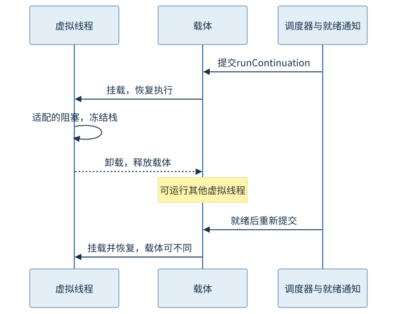
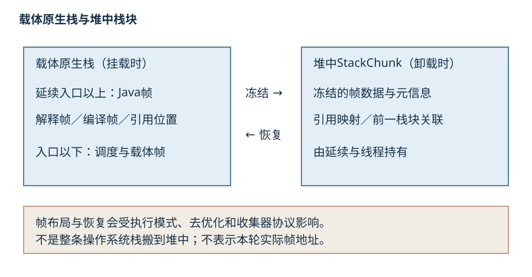
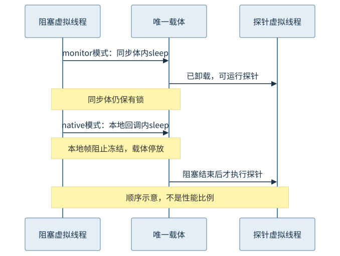

第六篇 · 内存模型、同步与线程
第28章 虚拟线程的运行机制
线程身份可以延续，载体却可以更换。把暂停状态放入可恢复的栈块，才使等待任务有机会释放系统执行资源。
本章基于 Java 开发工具包（Java Development Kit，JDK）25.0.5.0.2 与 OpenJDK HotSpot；Java 虚拟机（Java Virtual Machine，JVM）的实现结论固定到提交 1775ea114f64。规范、实现与本轮观察分别解释。源码阅读、运行说明与证据索引相互对应。
28.1 线程、载体与调度器
28.1.1 身份跟随虚拟线程
虚拟线程仍是Thread：它有名称、中断状态、栈和线程局部数据。执行时挂载到载体，载体是一个平台线程，由其操作系统线程实际执行指令。Thread.currentThread在应用中返回虚拟线程身份，不能用载体的名称或本地线程标识替代请求所属线程。
同一个虚拟线程在多次恢复时可以使用不同载体；同一个载体也可先后执行多个虚拟线程。这里的复用改变了线程资源分配方式，没有改变共享数据必须满足第25章同步规则这一要求。应用不应依赖每次都恢复到同一个载体。
28.1.2 调度并不创造处理器
固定实现默认采用专用ForkJoinPool调度延续任务。虚拟线程首次启动或就绪后提交runContinuation，取得载体后运行；就绪队列、运行身份与实际并行执行是不同层次。默认并行度与处理器可用性有关，本例显式设为1并限制池上限，以便观察先后关系，不冒称这是默认配置。
大量可卸载等待可以共用少量载体，减少“每个等待任务都占一个系统线程”的成本；持续计算的虚拟线程仍消耗载体与处理器。当前调度器不提供虚拟线程之间的通用时间片公平保证。不能把一万个虚拟线程的创建数当作一万个任务同时执行，或当作更低延迟的证明。

28.2 延续与栈块
28.2.1 暂停保存的是可恢复执行状态
延续保存一段可以暂停和继续的执行。虚拟线程发生可卸载阻塞时，HotSpot冻结其延续范围内的栈帧，把必要帧数据保存到堆中的栈块；卸载后载体可回到调度器。恢复时将所需帧恢复到载体栈，继续同一段Java执行，局部状态与调用关系必须一致。
这不是把整条操作系统原生栈原样拷贝到堆，也不是把阻塞方法简单改写成新任务后重新调用。延续入口以下的载体框架不属于同一冻结范围；本地帧等条件可能使冻结失败。固定continuationFreezeThaw.cpp区分快速和慢速路径，帧类型、栈块容量和收集器要求共同决定处理。

28.2.2 解释帧与编译帧需要共同遍历
栈中可能同时存在解释帧、不同编译级别的帧、适配与运行时边界。冻结和恢复不仅保存原始数据，还要让返回地址、帧遍历、对象引用位置与去优化协议仍可工作。不能把所有槽都当作对象引用，也不能只保存局部变量而忽略调用和异常恢复状态。
第18章的去优化恢复与这里的延续恢复都需要精确帧信息，却不是同一操作。栈块中的布局、引用映射及遍历方式是实现细节，程序不应据其内部偏移访问数据。本轮仅取得逻辑栈与源码机制，没有堆转储中逐字节解析栈块，也未声称观察到实际冻结地址。
28.3 挂载、卸载与阻塞适配
28.3.1 从一次sleep追踪载体释放
本章monitor模式的虚拟线程进入同步块后sleep六秒。睡眠路径经虚拟线程停放与定时恢复协作，成功冻结后卸载；就绪通知将其重新提交。期间唯一载体可以执行不需要同一monitor的探针。同步块对monitor的拥有权仍属于原虚拟线程，卸载没有提前释放应用锁。
VirtualThread.java的parkNanos、afterYield、unpark和runContinuation展示状态转换：未挂载等待、未挂载但可运行、已挂载运行彼此不同。本轮探针确实在阻塞结束前执行，载体快照显示worker在等待工作；两份输出中的载体相同只是本例单载体配置的结果，不是迁移被禁止。
28.3.2 三类占用要分别判断
第一类是已经适配并能卸载的阻塞，例如本例普通sleep。第二类是运行时能识别但不能通过延续冻结释放载体的等待，可能依具体操作采用其他补偿机制。第三类是一直执行的计算或未被适配的本地阻塞，它们占用载体而不必产生固定事件。
因此“没有VirtualThreadPinned事件”不能证明载体始终空闲；事件采集设置、阈值、阻塞是否经过Java停放都影响观察。判断时应结合虚拟线程栈、载体栈、就绪任务与处理器活动，不能仅看总线程数量或某个事件计数。
28.4 与其他子系统协作
28.4.1 栈块在堆上，引用仍须被精确追踪
垃圾收集（Garbage Collection，GC）需要识别冻结帧中的对象引用，按所用收集器的移动与屏障协议扫描或修正。运行栈、冻结栈块与恢复路径共同维护可达性；冻结不是把引用变成收集器看不见的任意字节。栈块及其引用目标只要仍从线程／延续可达，就可能继续存活。
冻结帧中的对象引用映射不同于“每字都扫描”的保守猜测。StackChunk相关结构和收集器屏障集承担相应协作；栈块容量、延续链和引用保留会影响堆预算。虚拟线程较轻并不等于零堆成本，也不保证海量栈在任意收集器和堆大小下都无风险。

28.4.2 线程局部数据属于虚拟线程
ThreadLocal与可继承线程局部数据仍有各自生命周期，每个虚拟线程初始化大对象会把成本乘以并发规模。把过去依附有限平台工作线程的昂贵缓存原样迁移，可能变成每任务一份。应按所有权估算，避免把线程局部机制当作资源池。第29章继续讨论只读上下文。
传统线程转储主要显示平台线程，虚拟线程要使用支持其线程容器与逻辑栈的转储方式。本轮同时采集Thread.dump_to_file的结构化结果与Thread.print的载体快照；本地回调栈中可以沿Java→本地→Java辨认边界。调试能力与工具版本需要一起记录，不能用缺少某个虚拟线程条目推断线程不存在。
28.5 JDK 25中的固定问题
28.5.1 当前监视器协议已经改变
JDK 25沿用Java 24引入的监视器协作：普通synchronized同步体内的可卸载阻塞，以及监视器进入与wait相关路径，可以与虚拟线程卸载协作。旧版“持有监视器就固定载体”的概括不适用于当前默认行为。本例monitor模式直接保留同步块，以免靠删除锁掩盖差异。
这是对载体释放能力的改进，不是对应用互斥的取消。线程即便卸载，若持有某个全局锁，其他需要它的任务仍受串行化限制。把锁内远程调用移到锁外是否正确，要依据数据不变量和协议判断，而不是只看固定事件是否消失。
28.5.2 本地帧和外部调用仍有边界
Java本地接口（Java Native Interface，JNI）调用进入C后再回调Java，回调中sleep时，栈上仍保留本地帧，延续可能无法冻结。本例native模式实际记录4.00秒VirtualThreadPinned，原因为Native or VM frame on stack，载体为worker-1，探针在回调结束后才执行。固定事件、原生调用栈与日志顺序相互印证。
外部函数及内存（Foreign Function & Memory，FFM）下行调用也需判断是否占用载体及其调用选项。直接在本地代码阻塞可能占住载体而没有经过Java停放，所以不必记录与本例相同事件。本轮没有运行外部函数变体、处理器密集循环或平台补偿容量实验，不把JNI回调结论泛化为全部本地调用的事件形态。

观察与边界
CH28-E01为两个虚拟线程与一个平台主线程；单载体、堆上限128兆二进制字节（mebibyte，MiB）。两模式均正常退出0，保留虚拟线程转储、载体转储、JDK飞行记录器（JDK Flight Recorder，JFR）配置与事件，监视器模式未记录固定事件，本地模式记录一次4.00秒固定。
本地库由随书C源和本机clang构建，只做一次有界Java回调，正常编译不自动构建或加载它。观察不是吞吐基准，也没有证明其他系统、架构、收集器或所有阻塞调用都具备同样行为。
回顾与思考
先看执行身份，再看载体是否释放；把栈块、同步状态和就绪通知连起来解释。固定只是载体占用的一类原因；同步仍须满足共享数据规则。
- 虚拟线程卸载但仍持有monitor时，探针为什么能够运行，竞争同一锁的任务却不能进入？
- 为何直接本地阻塞可能没有固定事件？
- 为何每线程一个大缓存会削弱虚拟线程的资源优势？
第29章把线程身份继续接到上下文绑定与父子任务结束责任。
来源
- JDK25虚拟线程指南：身份、调度、监视器改进与本地固定边界
- VirtualThread实现：runContinuation、mount／unmount、parkNanos、afterYield与parkOnCarrierThread
- 延续冻结与恢复：freeze_internal、thaw_internal及帧和引用处理
- 栈块表示：栈块、帧遍历与引用协作
- Continuation实现：yield与固定原因；内部接口不是应用契约
精确路径、符号、条件和本轮记录见来源索引；源码阅读页是教学源码，不冒充HotSpot实现。